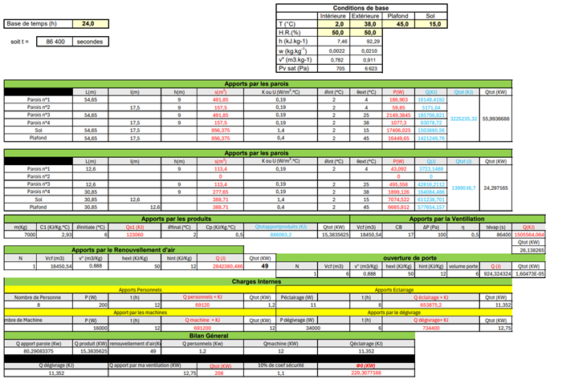

Dimensionnement
Les groupes froids ont été dimensionnés avec une puissance de 475 kW et une récupération de chaleur de 818 kW.

Réseaux hydrauliques
Les réseaux sont en inox avec isolation thermique pour limiter les pertes.

Pompes
- GF1 froid : 12,36 kW
- GF1 chaud : 19,43 kW
- GF2 froid : 9,30 kW
- GF2 chaud : 23,52 kW
Automate
Automate CAREL avec alternance automatique et gestion des défauts.